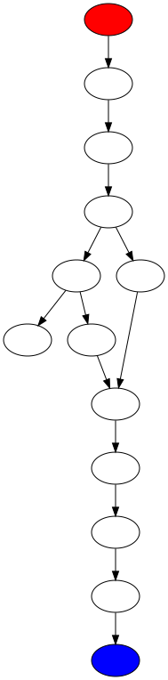
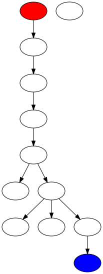
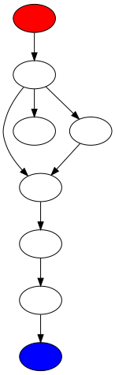
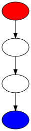
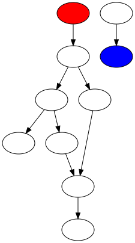

function Pin(c1):cadena
- Complejidad ciclomática V(G): 3
- Puntos función: 36
- Resumen:
- Variables declaradas: 3
- Líneas de código efectivas: 6
- Número de parámetros esperados: 1
- Número de llamadas a funciones: 5
- Grafo de llamadas a funciones:

function domain():void
- Complejidad ciclomática V(G): 1
- Puntos función: 27
- Resumen:
- Variables declaradas: 0
- Líneas de código efectivas: 6
- Número de parámetros esperados: 0
- Número de llamadas a funciones: 9
- Grafo de llamadas a funciones:

function Pon(p1):numero
- Complejidad ciclomática V(G): 3
- Puntos función: 9
- Resumen:
- Variables declaradas: 1
- Líneas de código efectivas: 3
- Número de parámetros esperados: 1
- Número de llamadas a funciones: 2
- Grafo de llamadas a funciones:

function imprimirconintro(c):void
- Complejidad ciclomática V(G): 1
- Puntos función: 8
- Resumen:
- Variables declaradas: 2
- Líneas de código efectivas: 2
- Número de parámetros esperados: 1
- Número de llamadas a funciones: 1
- Grafo de llamadas a funciones:

function Pon(c1):cadena
- Complejidad ciclomática V(G): 1
- Puntos función: 7
- Resumen:
- Variables declaradas: 2
- Líneas de código efectivas: 0
- Número de parámetros esperados: 1
- Número de llamadas a funciones: 1
- Grafo de llamadas a funciones:
function main():void
- Complejidad ciclomática V(G): 1
- Puntos función: 3
- Resumen:
- Variables declaradas: 0
- Líneas de código efectivas: 1
- Número de parámetros esperados: 0
- Número de llamadas a funciones: 1
- Grafo de llamadas a funciones:

function deVuelta(c1):cadena
- Complejidad ciclomática V(G): 3
- Puntos función: 31
- Resumen:
- Variables declaradas: 2
- Líneas de código efectivas: 3
- Número de parámetros esperados: 1
- Número de llamadas a funciones: 4
- Grafo de llamadas a funciones:

function Pin(p1):numero
- Complejidad ciclomática V(G): 3
- Puntos función: 15
- Resumen:
- Variables declaradas: 2
- Líneas de código efectivas: 5
- Número de parámetros esperados: 1
- Número de llamadas a funciones: 3
- Grafo de llamadas a funciones:
PUNTOS PROGRAMA COMPLETO
- Complejidad ciclomática V(G): 32
- Puntos función: 136
- Resumen:
- Variables declaradas: 12
- Líneas de código efectivas: 26
- Número de parámetros esperados: 6
- Número de llamadas a funciones: 26
- Grafo de complejidad ciclomática:

- Grafo de llamadas a funciones: